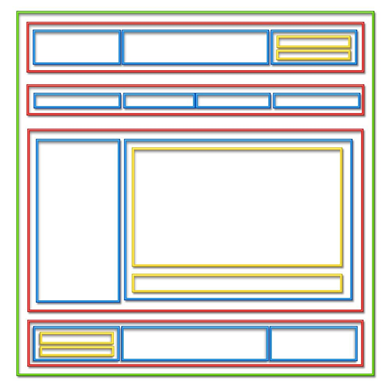

Обери завдання, яке бажаєш переглянути
1. Створити HTML-документ за вимогами лабораторної роботи:
– Використовуючи таблиці оформити HTML сторінку.
– Таблиця повинна містити об'єднані рядки і стовпці.
– Повинен бути заданий фон, а також вставлено фото або зображення.
– У рядках необхідно використовувати елементи HTML для форматування тексту усередині осередку.
2. Зробити верстку сторінки, розбивши її на блоки, подібно до наступного малюнку:
